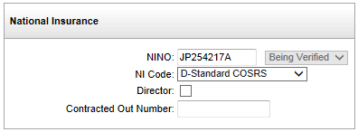

National Insurance Number Verification Request
A National Insurance Number Verification Request (NVR) allows an employer to check that NI numbers provided by new employees are valid, or to obtain the correct NI number from other employee identity details where it is not known.
The Verification Status shows alongside the NI number on the National Details Tab in Employee Maintenance.
National Insurance Layout Showing Verification Status

This can have values of:
- <blank> - NI not verified, no NVR planned.
- ‘To Verify’ – will be picked up on the next NVR submitted.
- ‘Being Verified’ – the NVR has been sent, but the response has not yet been received.
- ‘Verified’ - the NI number has been verified by the HMRC.
Users will only be able to update this field when it is one of the first two options and only be able to set it to one of the first two options. Changing the NI number will cause the verification status to change to ‘To Verify’.
When an NVR is submitted, includes in the submission all employees for which the NI number is flagged as ‘To Verify’ in Employee Maintenance. The verification status field on these employees is updated to ’Being Verified’. Responses to NVRs will be sent by the HMRC via the Outgoing Data Provisioning Service (DPS) and picked up using DPS Report.
When the NI number response from HMRC is downloaded, updates the employee record, if appropriate, to correct or blank out the NI number and adjust the verification status to either blank (when no NI number found) or ‘Verified’ (when we know we have a correct NI number).
NVRs do not appear on the frequency-specific versions of the HMRC Workbench.